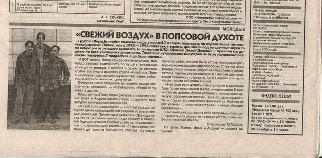

Статья о сайд-проекте Павла Нерика и Андрея Степанова - синти-поп группе «Fresh air» в газете «Наш Город» 22.10.2005г.
Группа «Depeche Mode» появилась ещё в конце

И ВОТ теперь, более чем десятилетие спустя, мне представилась возможность послушать гениальную команду — вживую. 6 октября в одном из местных клубов выступала волжская группа «Fresh Air». Зная о некоторой популярности музыкантов, перед действом выступили несколько депутатов.
Вечерние гости заведения исполнили самые старые хиты «депешей» — «Celebration», «World In My Eyes» и другие.
Лидер группы Павел Нерик (гитара), а так же его друзья Джей и Андрей (синтезаторы) сохранили весь антураж легендарного коллектива.
«Fresh Air» — с английского «чистый воздух», которого так не хватало ребятам в гараже во время первых репетиций. Поэтому так и назвались. Два года назад кто-то из троицы принёс сюда кассету с концертом будущих кумиров. Особый драйв сотни совмещённых с электрогитарой колебаний (от велосипедного звонка до грохота бьющегося стекла) настолько увлекли ребят, что они были готовы воспроизводить музыку всеми возможными способами. С тех пор юные рокеры стали скупать «бэушные» барабаны и синтезаторы. Гаража уже не хватало; и с местом для репетиций появились трудности. Зато в школах концерты наших героев собирали аншлаг.
«Нам ещё рано думать о выступлении в каком-нибудь более престижном месте, — признаётся Паша. — Там мы должны будем исполнять только свою музыку и собственные тексты». Пока молодые музыканты — студенты технических факультетов. Кое-кто из них увлечён стилем «индастриал», кое-кто обожает «крафтверк».
Компания уже составила себе программу-minimum — записать для раскрутки на радио хотя бы один профессиональный альбом.
Владислав ТАРАСОВ.
На фото: Павел, Илья и Андрей — свежее не бывает!